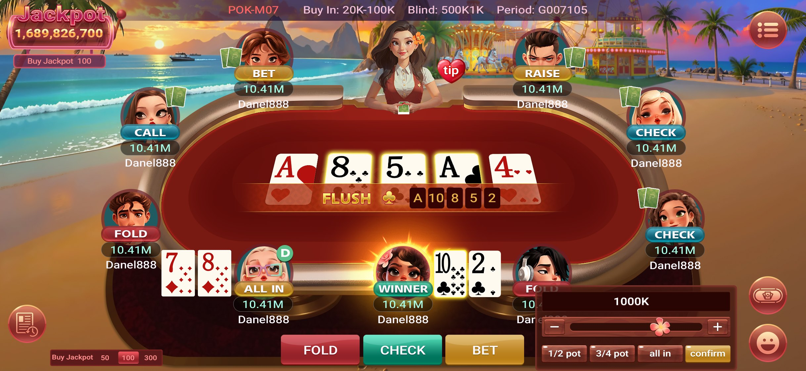

How to play Texas Hold’em
Two cards that are yours alone, five on the table that belong to everyone. Make the best five-card hand — or make everyone else believe you did.
- 2–9 players
- 52-card deck
- 5 community cards
- ~5 min to learn
The objective
You are dealt two private cards — your hole cards. Over four betting rounds, five shared community cards are turned face up in the middle of the table. Your hand is the best five-card combination you can build from those seven cards, using either, one, or none of your hole cards.
You win a pot one of two ways: you hold the strongest hand when the cards are shown, or everyone else folds and you are the last player left. The second way is why the betting matters as much as the cards.
The table
cards D SB BB 4 5 6
-
D
The button
Marks the nominal dealer. It moves one seat clockwise every hand, so position rotates and nobody keeps an advantage.
-
SB
Small blind
First seat left of the button. Posts a forced half-bet before any cards are dealt, so there is always something to play for.
-
BB
Big blind
Next seat along. Posts the full minimum bet — this is the stake other players must at least match to stay in the hand.

The same table, in the client. Every part of the diagram above turns up here — the button rotating round the seats, the blinds posted before the deal, and the community cards laid out in the middle.
- Top strip
Table name, buy-in range and the current blind level, so you know what a seat costs before you take one.
- Round the felt
Every seat shows that player’s last action — call, raise, check, fold, all-in — above their remaining stack.
- The middle
The community cards, with the best five-card hand named underneath once there is enough on the table to make one.
- Bottom bar
Your own two hole cards, the three action buttons, and a sizing slider with half-pot, three-quarter-pot and all-in shortcuts.
The betting rounds
Every hand runs through the same four rounds. Between each one, more community cards appear and everyone still in gets another chance to act.
-
Pre-flop
Two hole cards to each player, face down. First betting round, starting left of the big blind. Nothing is shared yet.
Your 2 cards · 0 on the table -
The flop
Three community cards are turned face up at once. Second betting round — this is where most hands take shape.
+3 shared · 3 on the table -
The turn
A fourth community card. Third betting round, and bets typically double in size from here.
+1 shared · 4 on the table -
The river
The fifth and last community card. Final betting round. Every card that will ever be seen is now on the table.
+1 shared · 5 on the table -
Showdown
If two or more players remain after the river, cards are turned over. Best five-card hand takes the pot; identical hands split it.
Flush · A 10 8 5 2 of clubs
Your actions
When the action reaches you, you have one of these choices. Which ones are available depends on whether someone has already bet.
- Fold
Throw the hand away. You lose whatever you have already put in the pot and sit out until the next deal. Always available.
- Check
Pass the action on without betting. Only possible when nobody has bet before you in this round.
- Call
Match the current bet to stay in the hand. Costs exactly the difference between what you have in and what is required.
- Bet
Put chips in first when no one else has. Everyone after you must now call, raise, or fold.
- Raise
Increase an existing bet. Re-opens the action — everyone who already acted must respond again.
- All-in
Push your entire stack. You can never lose more than that, but you can only win the portion of the pot you covered.
Hand rankings
Strongest at the top. When two players hold the same category, the higher cards decide it — and if those are identical too, the pot is split.
-
Royal Flush
Ten through Ace, all one suit. The unbeatable hand.
-
Straight Flush
Five in a row, all one suit.
-
Four of a Kind
All four cards of one rank, plus any fifth card.
-
Full House
Three of one rank and two of another.
-
Flush
Any five of the same suit, not in sequence.
-
Straight
Five in a row of mixed suits. Ace counts high or low.
-
Three of a Kind
Three cards of the same rank, two unrelated.
-
Two Pair
Two cards of one rank, two of another, plus a kicker.
-
One Pair
Two cards of the same rank and three unrelated cards.
-
High Card
Nothing connects. Your highest card plays.
Four things that help
- Position is money
Acting last means you have watched everyone else first. Play more hands on the button, far fewer from the blinds.
- Fold more than feels right
Most starting hands are not worth playing. Discipline before the flop saves more chips than clever play after it.
- Count the pot before you call
Compare what the call costs against what is already out there. Cheap calls into big pots are the ones that pay.
- Watch bet sizes, not faces
Online there are no faces. How much someone bets, and how fast, is the tell you actually get.